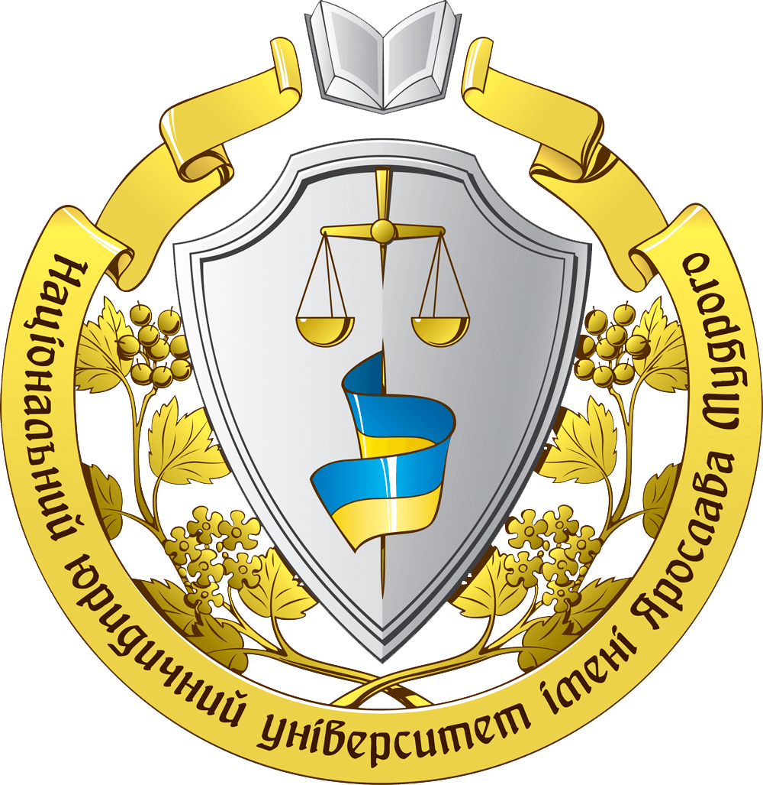

Магістерська програма
Кафедра
кримінального права
Міжнародні стандарти прав людини
у кримінальному праві
Проєкт "Від Нюрнберга до Гааги"
Наукова спадщина Б. Ференца і положення Римського Статуту Міжнародного кримінального Суду
Виставки: "Концтабір Ягідне","Навала. Київський постріл", "Азовсталь: Нові сенси"
Злочин агресії, воєнні злочини, злочини проти людяності